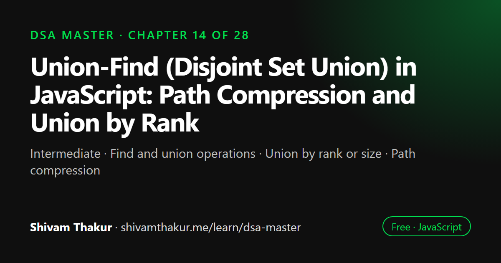

Chapter 14 of 28 · Intermediate
Union-Find (Disjoint Set Union) in JavaScript: Path Compression and Union by Rank
Union-Find (Disjoint Set Union) — Answering "Are We Connected?" Almost Instantly

Union-Find, also called disjoint set union (DSU), keeps track of which elements belong to the same group and can merge two groups or check whether two elements are connected almost instantly. This chapter builds it in JavaScript, then adds union by rank and path compression, which together bring each operation down to amortized O(α(n)), effectively constant time.
In this chapter you will learn
- Find and union operations
- Union by rank or size
- Path compression
- Inverse Ackermann amortized complexity
- Applications: components, cycles, Kruskal's MST
14.0 The Question This Structure Was Born to Answer
Chapter 13's Kruskal's algorithm needed a specific capability, over and over, at the heart of its inner loop: "are these two vertices already part of the same connected group?" We sketched a simplified version then; this chapter builds the real thing, with full rigor on why it achieves its famous near-constant-time performance — one of the most beautiful, surprising results in all of introductory algorithm design.
Real-Life Analogy: Merging Friend Groups at a Party
Imagine tracking friend groups at a large party. People arrive already knowing some others, forming small initial clusters. As the night goes on, someone from Group A might introduce their friend from Group B, and now — through that one connection — everyone in Group A and everyone in Group B is transitively part of one bigger group. You need to efficiently answer two questions all night: "are these two specific people in the same group?" and "merge these two groups into one." Union-Find is a data structure purpose-built for exactly these two operations, and nothing else.
14.1 What Is Union-Find?
Definition: Union-Find (also called Disjoint Set Union, or DSU) is a data structure that tracks a partition of elements into disjoint (non-overlapping) sets, supporting two core operations: find(x) (determine which set x belongs to, represented by a "representative" element of that set) and union(x, y) (merge the sets containing x and y into one).
14.1.1 The Naive Implementation: A Forest of Trees
The classic implementation represents each set as a tree, where every element points to a "parent," and the root of each tree serves as that set's representative. Initially, every element is its own parent (every element is its own separate set of size 1).
class UnionFind {
#parent = new Map();
makeSet(x) {
if (!this.#parent.has(x)) {
this.#parent.set(x, x); // every element starts as its OWN representative
}
}
find(x) {
let current = x;
while (this.#parent.get(current) !== current) {
current = this.#parent.get(current); // walk up to the root
}
return current;
}
// Time: O(tree height) — could be O(n) in the worst case, without further optimization!
union(x, y) {
const rootX = this.find(x);
const rootY = this.find(y);
if (rootX === rootY) return false; // already in the same set
this.#parent.set(rootX, rootY); // attach one root under the other
return true;
}
}ASCII Visualization: The Naive Version's Worst Case
Repeatedly union(2,1), union(3,2), union(4,3), union(5,4)... in this specific order:
union(2,1): parent={1:1, 2:1}
union(3,2): find(2)=1, find(3)=3 -> parent={1:1, 2:1, 3:1}
union(4,3): find(3)=1, find(4)=4 -> parent={1:1, 2:1, 3:1, 4:1}
Wait — with naive union attaching root(x) under root(y), let's trace WITHOUT any
optimization, unioning in a way that creates a long chain instead:
Imagine instead union(1,2), union(2,3), union(3,4), union(4,5), each time attaching
the FIRST argument's root under the second unconditionally:
union(1,2): parent={1:2, 2:2}
union(2,3): find(2)=2 -> parent={1:2, 2:3, 3:3}
union(3,4): find(3)=3 -> parent={1:2, 2:3, 3:4, 4:4}
union(4,5): find(4)=4 -> parent={1:2, 2:3, 3:4, 4:5, 5:5}
Structure: 1 -> 2 -> 3 -> 4 -> 5 (a straight CHAIN — structurally a linked list!)
find(1) now requires walking 1->2->3->4->5: O(n) in the worst case!
This is EXACTLY the same "degenerate, unbalanced tree" failure mode as an
unbalanced BST from Chapter 8 — a tree data structure with no balancing
guarantee can always be forced into a linked-list-shaped worst case.14.2 Optimization 1: Union by Rank (or Size)
Definition: Union by rank (or size) always attaches the shorter (or smaller) tree's root under the taller (or larger) tree's root, preventing the chain-like degeneration shown above.
class UnionFindWithRank {
#parent = new Map();
#rank = new Map(); // an upper bound on each tree's height
makeSet(x) {
if (!this.#parent.has(x)) {
this.#parent.set(x, x);
this.#rank.set(x, 0);
}
}
find(x) {
let current = x;
while (this.#parent.get(current) !== current) {
current = this.#parent.get(current);
}
return current;
}
union(x, y) {
const rootX = this.find(x);
const rootY = this.find(y);
if (rootX === rootY) return false;
// Attach the SHORTER tree under the TALLER tree's root
if (this.#rank.get(rootX) < this.#rank.get(rootY)) {
this.#parent.set(rootX, rootY);
} else if (this.#rank.get(rootX) > this.#rank.get(rootY)) {
this.#parent.set(rootY, rootX);
} else {
// Equal rank: pick either as the new root, and INCREMENT its rank
this.#parent.set(rootY, rootX);
this.#rank.set(rootX, this.#rank.get(rootX) + 1);
}
return true;
}
}With Union by Rank Alone
find: O(log n) (bounded tree height)union: O(log n) (dominated by twofindcalls)
This is already a massive improvement over the naive O(n) worst case — but the next optimization pushes this even further, into "practically constant time" territory.
14.3 Optimization 2: Path Compression
Definition: Path compression flattens the tree during every find call, making every node on the path directly point to the root, so future lookups for those same nodes become instant.
class UnionFindOptimized {
#parent = new Map();
#rank = new Map();
makeSet(x) {
if (!this.#parent.has(x)) {
this.#parent.set(x, x);
this.#rank.set(x, 0);
}
}
find(x) {
if (this.#parent.get(x) !== x) {
this.#parent.set(x, this.find(this.#parent.get(x))); // PATH COMPRESSION!
}
return this.#parent.get(x);
}
// Every node visited on the way to the root gets REWIRED to point DIRECTLY at the root!
union(x, y) {
const rootX = this.find(x);
const rootY = this.find(y);
if (rootX === rootY) return false;
if (this.#rank.get(rootX) < this.#rank.get(rootY)) {
this.#parent.set(rootX, rootY);
} else if (this.#rank.get(rootX) > this.#rank.get(rootY)) {
this.#parent.set(rootY, rootX);
} else {
this.#parent.set(rootY, rootX);
this.#rank.set(rootX, this.#rank.get(rootX) + 1);
}
return true;
}
connected(x, y) {
return this.find(x) === this.find(y);
}
}ASCII Visualization: Path Compression in Action
Before find(4), tree structure:
1
/
2
/
3
/
4
find(4):
Recursive walk: 4's parent is 3 (not root) -> recurse on find(3)
3's parent is 2 (not root) -> recurse on find(2)
2's parent is 1 (not root) -> recurse on find(1)
1's parent IS 1 (root!) -> return 1
NOW, as the recursion UNWINDS, every node visited gets rewired directly to the root:
parent.set(2, 1) <- 2 now points DIRECTLY at 1 (already did, no change here)
parent.set(3, 1) <- 3 now points DIRECTLY at 1 (was pointing at 2 before!)
parent.set(4, 1) <- 4 now points DIRECTLY at 1 (was pointing at 3 before!)
After find(4), tree structure:
1
/ | \
2 3 4
Any FUTURE find(3) or find(4) is now O(1) — direct parent lookup, no walking at all!14.4 Applications Beyond MST: Where Union-Find Actually Shows Up
14.4.1 Cycle Detection in Undirected Graphs (An Elegant Alternative to Chapter 11's DFS Approach)
function hasCycleUnionFind(vertices, edges) {
const uf = new UnionFindOptimized();
vertices.forEach(v => uf.makeSet(v));
for (const [u, v] of edges) {
if (uf.connected(u, v)) {
return true; // u and v are ALREADY connected — this edge would create a cycle!
}
uf.union(u, v);
}
return false;
}14.4.2 Counting Connected Components (An Alternative to Chapter 11's DFS/BFS Approach)
function countComponentsUnionFind(vertices, edges) {
const uf = new UnionFindOptimized();
vertices.forEach(v => uf.makeSet(v));
for (const [u, v] of edges) {
uf.union(u, v);
}
const roots = new Set(vertices.map(v => uf.find(v)));
return roots.size; // the number of DISTINCT roots = the number of connected components
}14.4.3 Detecting "Friend Circles" / Equivalence Classes
A very common real-world framing: given pairwise "these two things are related/equivalent" facts, group everything into its equivalence classes. This is a direct, practical application of the party-friend-groups analogy from section 14.0.
function findFriendCircles(n, friendships) {
const uf = new UnionFindOptimized();
for (let i = 0; i < n; i++) uf.makeSet(i);
for (const [a, b] of friendships) {
uf.union(a, b);
}
const circles = new Map(); // root -> array of members
for (let i = 0; i < n; i++) {
const root = uf.find(i);
if (!circles.has(root)) circles.set(root, []);
circles.get(root).push(i);
}
return [...circles.values()];
}14.4.4 Kruskal's Algorithm, Revisited (Now With the Real Implementation)
Recall Chapter 13's simplified find/union helpers embedded directly inside Kruskal's algorithm. With this chapter's fully-optimized UnionFindOptimized class in hand, Kruskal's algorithm becomes:
function kruskalMSTFinal(vertices, edges) {
const sortedEdges = [...edges].sort((a, b) => a[2] - b[2]);
const uf = new UnionFindOptimized();
vertices.forEach(v => uf.makeSet(v));
const mstEdges = [];
let totalWeight = 0;
for (const [u, v, weight] of sortedEdges) {
if (!uf.connected(u, v)) {
uf.union(u, v);
mstEdges.push([u, v, weight]);
totalWeight += weight;
if (mstEdges.length === vertices.length - 1) break;
}
}
return { mstEdges, totalWeight };
}14.5 Union-Find vs. BFS/DFS for Connectivity: A Direct Comparison
14.6 Edge Cases and Gotchas Checklist
- Calling
find/unionon an element never passed tomakeSet. Decide and state a clear contract (throw, auto-create, etc.) — our implementations above assumemakeSethas been called first. - Self-union (
union(x, x)). Should correctly returnfalse(already "connected" to itself) without error. - Forgetting path compression, only using union by rank (or vice versa) — both optimizations are needed together for the full O(α(n)) guarantee; either alone only gives O(log n).
- Using
Mapvs. plain array for#parent/#rank— aMap(as used throughout this chapter) handles arbitrary element types generally; if elements are guaranteed to be small sequential integers (0ton-1), a plain array is a valid, slightly faster alternative, directly mirroring Chapter 4'sMap-vs-array trade-off discussion for trie nodes. - Recursive
find's stack depth — the recursive path-compression implementation shown has O(tree height) recursion depth on its first call along any given path (before compression kicks in); for extremely large, adversarially-constructed inputs, an iterative two-pass version (walk to the root, then walk again to rewire) avoids any recursion-depth concern entirely, directly applying Chapter 2's recursion-vs-iteration safety lesson.
14.7 Chapter Summary
This chapter delivered on the direct promise made at the end of Chapter 13: a full, rigorous treatment of Union-Find, the data structure Kruskal's algorithm relies on for efficient connectivity checks. We began with the naive forest-of-trees implementation and were explicit about its worst-case failure mode — an unmanaged tree can always degenerate into a linked-list-shaped chain under an adversarial sequence of unions, giving O(n) worst-case find, structurally identical to the degenerate-BST lesson from Chapter 8 and the "why track a tail pointer" lesson from Chapter 5.
We fixed this with two independent optimizations, each worth understanding on its own merits. Union by rank/size (always attach the shorter/smaller tree beneath the taller/larger one — the same "let the bigger side dominate" instinct as Chapter 3's array doubling and Chapter 4's hash table resizing) provides a genuinely unconditional O(log n) height guarantee, provable by the fact that a tree of rank r must contain at least 2^r elements. Path compression (flattening every node on a find path to point directly at the root, "cutting a shortcut for everyone who follows") provides continuous, cumulative structural improvement across repeated operations. Combined — and we were careful to emphasize that both are needed together, not either alone — these two optimizations produce one of the most celebrated results in introductory algorithms: O(α(n)) amortized time per operation, where the inverse Ackermann function grows so slowly that it never exceeds 4 for any practically conceivable input size, making Union-Find's core operations effectively constant-time in every real-world sense.
We then surveyed Union-Find's applications well beyond its Chapter 13 motivating use case: a genuinely cleaner alternative to Chapter 11's DFS-based undirected cycle detection (sidestepping the "exclude the immediate parent" concern entirely, since a same-edge false positive is structurally impossible), an alternative connected-components counter, and the natural fit for any "process a stream of pairwise relationships, answer grouping/connectivity questions" problem shape — the "friend circles" pattern being the canonical framing. We closed with an honest, direct comparison against BFS/DFS: a single static connectivity check favors plain BFS/DFS for its simplicity, but Union-Find wins decisively the moment edges are added incrementally with connectivity queries interspersed between additions, turning what would be O(m·(V+E)) total cost across m operations into O(m·α(n)) — a difference that, at scale, separates a responsive system from an unusably slow one.
14.8 Revision Notes
- Union-Find answers two questions efficiently: "are these connected?" (find) and "merge these groups" (union) — the naive version can degenerate to O(n) per operation, just like an unbalanced BST.
- Union by rank/size (attach smaller tree under larger) provides an unconditional O(log n) height guarantee, provable via the "rank-r tree needs ≥ 2^r elements" argument.
- Path compression (flatten every node on a find-path to point directly at the root) provides continuous structural improvement across repeated calls.
- Combined, union by rank + path compression give O(α(n)) amortized time — the inverse Ackermann function, effectively O(1) for any practical input size. Both optimizations are needed together for this result.
- Union-Find offers a cleaner alternative to DFS-based undirected cycle detection, sidestepping the "exclude immediate parent" concern entirely.
- Union-Find wins decisively over repeated BFS/DFS when edges are added incrementally with connectivity queries interspersed — O(m·α(n)) versus O(m·(V+E)) for m total operations.
14.9 Mind Map (ASCII)
UNION-FIND (DSU)
|
+-----------------+-----------+-----------+----------------------+
| | | |
NAIVE VERSION OPTIMIZATION 1 OPTIMIZATION 2 APPLICATIONS
| UNION BY RANK PATH COMPRESSION |
Forest of trees, | | Kruskal's MST
O(n) worst case Attach smaller tree Flatten find-path (Ch.13 motivator)
(can degenerate under larger to point directly |
to linked-list- (same "bigger side at root Cycle detection
shaped chain, dominates" instinct ("cut a shortcut (cleaner than
Ch.5/Ch.8 deja vu) as Ch.3 array doubling, for everyone Ch.11's DFS —
Ch.4 hash resizing) who follows") no parent-
| | exclusion needed!)
O(log n) height continuous |
GUARANTEED cumulative Connected
(rank-r needs improvement components,
>= 2^r elements) | friend circles
| | |
+----------+--------------+ WHEN TO USE vs
| BFS/DFS (Ch.11):
BOTH TOGETHER = static check once
O(alpha(n)) amortized -> BFS/DFS simpler
~ O(1) practically incremental edges +
(inverse Ackermann, repeated queries
never exceeds 4 for -> UNION-FIND wins
any real input size!) decisively14.10 Cheat Sheet
UNION-FIND QUICK REFERENCE
=============================
find(x): walk up parent pointers to the root (WITH path compression: flatten as you go)
union(x,y): find both roots; if different, attach one under the other (WITH union by rank:
attach shorter/smaller tree under taller/larger)
connected(x,y): find(x) === find(y)
COMPLEXITY PROGRESSION
==========================
Naive (no optimization): O(n) worst case per operation
+ Union by rank/size only: O(log n) per operation (GUARANTEED, any operation order)
+ Path compression only: O(log n) amortized (similar guarantee via different means)
+ BOTH together: O(alpha(n)) amortized ~ O(1) practically
(inverse Ackermann function, <= 4 for any real n)
WHEN TO REACH FOR UNION-FIND
================================
"are these two things connected/related?" (processed incrementally, queried repeatedly)
"merge groups" / "friend circles" / "equivalence classes"
"detect a cycle while adding edges one at a time" (cleaner than DFS's parent-exclusion)
"count connected components after a stream of pairwise unions"
Kruskal's MST algorithm (Chapter 13's motivating use case)
UNION-FIND vs BFS/DFS (Ch.11)
=================================
Static graph, check ONCE -> BFS/DFS (simpler, no extra structure)
Incremental edges + repeated queries -> UNION-FIND (O(m*alpha(n)) vs O(m*(V+E)))
Need the ACTUAL path, not just connectivity -> BFS/DFS (Union-Find has no path info)14.11 Key Takeaways
- Naive Union-Find can degenerate to O(n) per operation — the same unmanaged-tree failure mode as Chapters 5 and 8.
- Union by rank/size provides an unconditional O(log n) height guarantee via a provable "rank-r needs ≥ 2^r elements" argument.
- Path compression continuously flattens trees, providing cumulative structural improvement across repeated calls.
- Combined, both optimizations yield O(α(n)) amortized time — effectively O(1) for any practical input, one of algorithm design's most celebrated results.
- Union-Find cleanly handles cycle detection and connected components, and decisively outperforms repeated BFS/DFS when edges arrive incrementally with interspersed connectivity queries.
14.12 20 Multiple Choice Questions
Tap an answer to check it. Your score updates as you go.
Score: 0 / 0 answered (20 questions)
What two core operations does Union-Find support?
What is the worst-case time complexity of
findin a naive, unoptimized Union-Find implementation?Why can a naive Union-Find implementation degenerate to a linked-list-shaped chain?
What does "union by rank" do?
What complexity guarantee does union by rank alone provide?
What is the mathematical basis for union by rank's O(log n) guarantee?
What does "path compression" do?
What is the combined amortized time complexity when BOTH union by rank AND path compression are used?
What is notable about the inverse Ackermann function's growth rate?
Is using only ONE of the two optimizations (rank OR path compression, not both) sufficient for the full O(alpha(n)) guarantee?
How does Union-Find provide a cleaner alternative to DFS-based cycle detection in undirected graphs (Chapter 11)?
What algorithm from Chapter 13 is Union-Find's most direct, motivating use case?
When is Union-Find preferred over repeatedly running BFS/DFS for connectivity checks?
What is the time complexity comparison for m total operations (edges + queries): repeated BFS/DFS vs. Union-Find?
What does Union-Find fundamentally NOT provide, unlike BFS/DFS?
What is a "friend circles" problem, in Union-Find terms?
What data structure is commonly used for the
#parentmap in a general-purpose Union-Find implementation?What happens when
union(x, x)is called (unioning an element with itself)?Why might an iterative (rather than recursive)
findimplementation be preferred for extremely large, adversarial inputs?What signal phrase in a problem most strongly suggests Union-Find as the right tool?
Show the answer key
1-b, 2-c, 3-b, 4-b, 5-b, 6-a, 7-b, 8-c, 9-b, 10-b, 11-b, 12-b, 13-b, 14-b, 15-b, 16-b, 17-b, 18-b, 19-b, 20-b
14.13 20 Coding Problems
Easy
- Implement the naive Union-Find from memory (section 14.1.1), and demonstrate its worst-case O(n) behavior with a deliberately constructed chain of unions.
- Implement union by rank only (section 14.2), and verify the resulting tree height stays bounded across a large number of unions.
- Implement path compression only (without union by rank), and verify it still produces correct
connected()results. - Write a function to count the number of disjoint sets currently tracked by a Union-Find instance.
- Write a function to return the size of the set containing a given element (requires tracking set sizes alongside ranks).
Medium
- Implement the fully optimized
UnionFindOptimizedclass from memory (section 14.3), combining both optimizations. - Implement
hasCycleUnionFindfrom memory (section 14.4.1), and compare its logic explicitly against Chapter 11's DFS-based approach in a comment. - Implement
countComponentsUnionFindfrom memory (section 14.4.2). - Implement
findFriendCirclesfrom memory (section 14.4.3), testing it on a small hand-constructed friendship list. - Given a list of accounts with associated emails (some accounts share emails, indicating they're the same person), use Union-Find to merge accounts belonging to the same person.
Hard
- Implement Kruskal's algorithm using the fully optimized Union-Find class (section 14.4.4), and benchmark it against the simplified version from Chapter 13 on a large randomly-generated graph.
- Given a grid representing a map where some cells can be connected by "bridges" added one at a time, use Union-Find to efficiently answer "are these two specific cells connected?" after each bridge addition, without re-running BFS/DFS each time.
- Given a list of equations of the form "a == b" or "a != b", determine if the entire system is satisfiable, using Union-Find to group equal variables and then checking inequality constraints against the resulting groups.
- Implement "Number of Islands II" — given a grid where land cells are added one at a time (not all at once), efficiently report the current number of islands after each addition, using Union-Find (rather than re-running full-grid DFS/BFS after every single addition).
- Given a network of servers with connections added over time, and periodic queries asking "what is the size of the network containing server X," implement an efficient Union-Find-based solution tracking set sizes.
Interview Level
- (Google-level) Given a large-scale web crawler's discovered links (added incrementally as pages are crawled), use Union-Find to efficiently group pages into "connected clusters" of the web graph, answering "are page A and page B in the same cluster" queries in near-constant time as crawling proceeds.
- (Amazon-level) Given a fulfillment network where warehouses are connected by shipping routes added over time, use Union-Find to determine, at any point, whether two specific warehouses can currently exchange inventory (i.e., are connected), efficiently handling a high volume of route additions and queries.
- (Microsoft-level) Given a version control system's branch-merge history (each merge connects two branches), use Union-Find to determine which branches are currently part of the same "merged lineage," and detect if a proposed merge would be redundant (the branches are already connected).
- (Meta-level) Given a social network's friend-request-acceptance stream (processed as pairwise unions over time), use Union-Find to efficiently answer "are user A and user B in the same friend group" at any point in the stream, and separately, to detect the exact moment the entire network became one single connected group.
- (Netflix-level) Design a content-tagging deduplication system: given user-submitted tags that are sometimes synonyms of each other (submitted as pairwise "these tags mean the same thing" facts over time), use Union-Find to group all synonymous tags into canonical tag groups, efficiently supporting both incremental synonym additions and "what's the canonical group for this tag" queries at scale.
14.14 5 Interview Questions
- "Explain Union-Find's two core operations and their naive implementation's worst-case complexity." (Tests baseline understanding before optimization.)
- "What is union by rank, and what complexity guarantee does it provide, and why?" (Tests the rank-height mathematical argument specifically.)
- "What is path compression, and why do we need both it AND union by rank together for the best complexity?" (Tests understanding that both optimizations are needed jointly.)
- "What is the amortized complexity of Union-Find with both optimizations, and what does that complexity term actually mean?" (Tests the specific, quotable inverse-Ackermann fact.)
- "When would you use Union-Find instead of just re-running BFS/DFS for connectivity checks?" (Tests the incremental-edges-plus-repeated-queries decision framework.)
14.15 3 Real Projects
- Complete Union-Find Library: Build the fully optimized
UnionFindOptimizedclass with rank tracking, path compression, set-size tracking, and agetComponents()method, with a self-check script verifying correctness against a naive BFS/DFS-based connectivity checker across randomized test graphs. - Incremental Network Connectivity Tracker: Build a Node.js tool simulating a growing network (servers/warehouses/social connections), processing a stream of "connect A and B" events and "are A and B connected" queries, using Union-Find, and benchmark it against a naive "re-run BFS after every edge" approach to empirically demonstrate the O(m·α(n)) vs. O(m·(V+E)) gap.
- Account Merger: Build the account-deduplication tool from coding problem #10 as a standalone module, taking a list of accounts with associated emails and using Union-Find to correctly merge and report which accounts belong to the same underlying person.
14.16 Further Reading
- Robert Tarjan's foundational analysis proving the O(α(n)) amortized bound for Union-Find with both optimizations — the paper that established this now-classic result.
- Search "inverse Ackermann function explained" for accessible deep dives into why this function grows so remarkably slowly, and its formal relationship to the (extremely fast-growing) Ackermann function itself.
- LeetCode's "Union Find" problem tag, for extensive additional practice directly extending this chapter's applications (accounts merge, number of islands II, redundant connection, and many more).
- Steven Skiena, The Algorithm Design Manual, section on union-find structures, for additional real-world application discussion.
Union-Find (Disjoint Set Union) in JavaScript: frequently asked questions
What is Union-Find used for?
Union-Find answers whether two elements are in the same group while groups keep merging. It is used for counting connected components, detecting cycles in undirected graphs, Kruskal's minimum spanning tree, network connectivity and image segmentation.
What is path compression?
During a find operation, path compression points every node on the path directly at the root. Later finds on those nodes take a single step, which keeps the trees almost flat.
What is the time complexity of Union-Find?
With both union by rank and path compression, each operation takes amortized O(α(n)) time, where α is the inverse Ackermann function. α(n) is at most 4 for any realistic input, so it is effectively constant.
When is Union-Find better than BFS or DFS?
Union-Find is better when edges arrive over time and you must answer connectivity questions between additions. Re-running BFS or DFS after every new edge would cost O(V + E) each time.